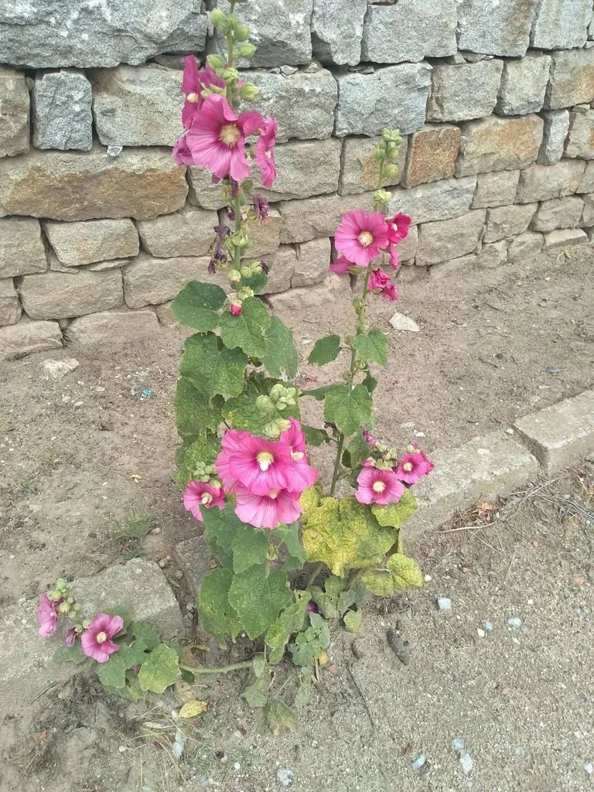

花卉与草本 · 植物界
蜀葵 Alcea rosea

锦葵科二年生草本，花茎高挺、花朵自下而上开放，因原产四川得名，古称一丈红，是庭院墙边常见的传统花卉。
- 分类
- 门被子植物门纲木兰纲目锦葵目科锦葵科属蜀葵属
- 栖息环境
- 向阳的院墙边、路旁与山坡，喜光、耐旱、耐寒
- 地理分布
- 原产中国西南地区，现各地庭院广泛栽培
- 保护级别
- 暂无评估
物种志
蜀葵为锦葵科蜀葵属二年生草本，株高 1–2.5 米，茎直立，全株被星状毛。叶片大，圆心形，边缘有浅裂和锯齿，叶柄长。花大，直径 6–12 厘米，单瓣或重瓣，有红、粉、白、黄、紫等色，沿茎自下而上排列成总状花序，花期 5–8 月，果期 7–9 月，种子肾形。
蜀葵原产中国西南，因在四川一带栽培广泛而得名，喜阳光充足、凉爽的环境，耐寒耐旱，对土壤要求不严，常自播繁衍。它株形高大挺拔，古称“一丈红”，是院落墙边和路旁常见的传统花卉。花瓣可食用，含花青素，民间有用花瓣泡水、做点心的做法；根、茎、叶和花均可入药，有清热解毒之效。
形态与习性
- 株高1–2.5 米，茎直立被毛
- 花期5–8 月，花自下而上开放
- 果期7–9 月，分果扁圆形
- 光照喜充足阳光
- 水分耐旱，忌积水
- 土壤疏松肥沃、排水良好的壤土
- 繁殖以播种为主，自播能力强
- 主要用途庭院观赏、花瓣食用、入药
趣味知识
- 蜀葵因原产四川一带而得名，古称“一丈红”，形容其花茎高挺。
- 花朵沿茎自下而上依次开放，下面的花先开、上面的花后开。
- 花瓣含花青素，可作食品染色或点缀，民间有以花瓣做点心的习俗。
- 蜀葵全株被星状毛，触摸叶片有粗糙感。